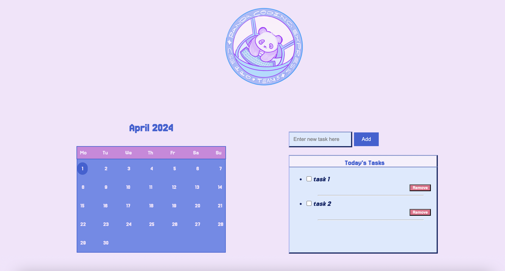
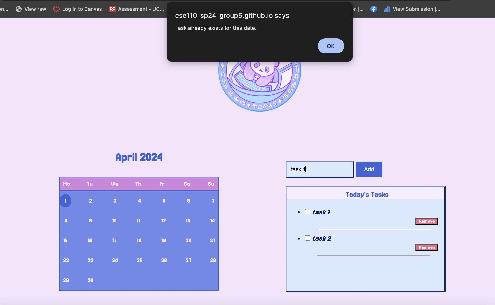

Click on our banner to see our calendar!


Table of Contents
Team Members
- Drishti Regmi
- Haley Nguyen
- Vishaal Gaddipati
- Nicholas Cheah
- Angel Ren
- Hugo D Souza
- Stephen Tong
- Maasilan Kumaraguru
- Xavier Navarro
- Arnav Modi (Team Lead)
- Mishka Jethwani (Team Lead)
Github Pages Link
You can access our calendar WebApp here: https://cse110-sp24-group5.github.io/calendar/.
If you would like to see a demo of this, you can checkout the video here.
Purpose
The main purpose of this calendar application is to boost productivity. It provides users with a convenient and user-friendly way to visualize the days of the month, with a focus on the month of April in 2024. This application aims to simplify the task of keeping track of daily events, appointments, and reminders by offering a comprehensive calendar view.
Users can easily track their tasks by clicking on a specific day, this will then display a list of tasks scheduled for that particular date. This feature ensures that users can stay organized and never miss an important event or deadline.
Features

1. Calendar View
The application offers a clean calendar view, making it easy for users to navigate their schedules. The calendar is displayed prominently, with the current month (April's) dates clearly visible.
2. Selecting a Date
Users can easily select a specific date by clicking on it within the calendar view. This action will display a list of tasks scheduled for that particular date, providing a clear overview of their daily commitments. You can also navigate to the next date by just pressing the tab button on your keybord.
3. Adding Tasks
Users can create a new task by clicking on a date and entering the task details, and clicking the add button. You can also add a task in by clicking on the enter button.
4. Removing Tasks
In order to keep everything up-to-date. Users can simply locate the task they wish to remove and click the remove button. This feature ensures that the calendar remains accurate and can be edited any time.
5. Data Storage
One another feature of this calendar is it persistently stores your information locally, even if you accidentally refresh the page or close and reopen the application. Your tasks, events, and calendar data are stored.
6. Duplicate Task Detection
To prevent accidental duplication of tasks, the application includes a helpful feature. If a user attempts to add the same task more than once, a pop-up notification will appear, alerting them to the potential duplicate entry.

Linting
Linting is a crucial practice that helps ensure code quality, consistency, and maintainability across the entire codebase. In this project, linting has been set up for HTML, CSS, and JavaScript to adhere to industry-standard best practices and coding conventions. HTML linting checks for proper markup structure, CSS linting maintains consistent stylesheet styles, and JavaScript linting catches syntax errors, potential bugs, and performance issues in the application's logic and functionality.
We have implemented automated linting checks performed on every push or pull request to make sure potential issues are caught early in the development process, and make sure that our coding standard is met. When you push changes, on GitHub you will be able to see a tick or cross next to it based on whether it passes that check. You can click on the same to view details. Along with this you can also run the linter locally.
To run all of them: npm run lint
To run only the HTML lint: npm run lint:html
To run only the CSS lint: npm run lint:css
To run only the Javascript lint: npm run lint:js
SWOT Analysis
Strengths:
| Strength | Details |
|---|---|
| Efficiency | - Utilized GitHub issues to assign tasks to members and linked pull requests to handle issues |
| Organization | - Evenly divided tasks among group members, completed subtasks within self-imposed deadlines |
| Responsiveness | - Implemented webpage to adjust layout based on the device the page is loaded on |
Weaknesses:
| Weakness | Details |
|---|---|
| Lack of Widget features | - Widget only has the days of April listed, not a year-long calendar yet |
| Scheduling Meetings | - The team as a whole did not have many opportunities to have meetings in person to communicate the progress made so far |
Opportunities:
| Opportunity | Details |
|---|---|
| Additional Features | - Adding all the months to the calendar along with a toggle bar to change the months - Making the Task List more customizable - Allow people to schedule events on the calendar (start and end time) instead of just adding todos - Recurring events on the calendar - Allow users to import and export their calander data - More alternate color schemes (like dark mode, ect.) - Add a current date tracker (different from selected day) |
| Real Implication | - We got to use HTML, CSS and JS to build a useful application |
Threats:
| Threat | Details |
|---|---|
| Deadlines | - Tight turnaround time for all teams to complete their respective subtasks |
| Learning | - We had a little time to learn how to use JavaScript, a new language for some |
Our Learnings
Applying Labs to a Real-World Application
Throughout this project, we had the opportunity to apply the concepts and techniques learned in the course labs to a practical, real-world application. Translating theoretical knowledge into a functional web application helped us truly understand how everything works. We also learned how the development process works, and how different members in a team contribute.
Effective Use of AI Assistance
During the development process, we learned how to effectively leverage AI assistance tools to enhance our productivity and understand the technologies better.
Team Work
We learned how to effectively communicate among ourselves. We divided ourselves into 3 teams, one for HTML, CSS and Javascript each. We learned how to manage and collaborate amongst ourselves and properly use github actions to organize tasks.